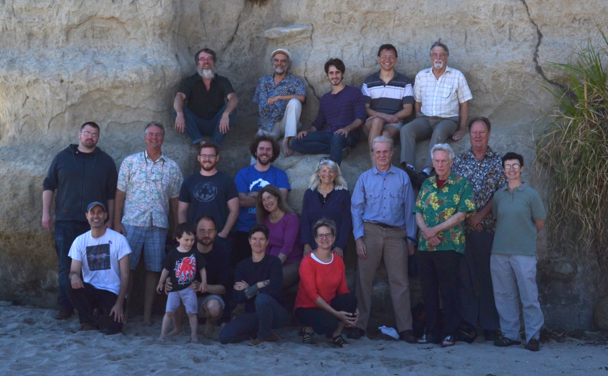

).
).This is a standard paragraph ("p" tag) of explanatory text. The next part of the page demonstrates how to create a multi-column layout using the grid layout feature of bootstrap.css, a widely used stylesheet which is now included in the browser static pages.
This is one of two subsections, formatted as equal-sized columns. The bootstrap grid contains 12 columns; column widths are specified using classes "col-md-1" through "col-md-12". This example contains two divs, each assigned class "col-md-6", within a "row" div.
NOTE: The two columns are displayed only on wide screens. On small screens, the sections will be stacked vertically (a feature of bootstrap responsive layout).
This is the next level, a subsection. Use an "h3" tag for this. To structure content below this level use a list, table, or titled paragraph:
Use the "h6" tag at any level in the section hierarchy to precede a paragraph with a bolded title.
The description of lists below is formatted as an HTML definition list. Use this format when defining terms or phrases. (You will not see this much in our current pages -- instead, this type of text was usually styled ad-hoc using "strong" and "br" tags).
Here is a bulleted list ("ul" and "li" elements). To suppress the bullet add the class "gbsNoBullet" to the "ul" tag.
Here is a numbered list ("ol" and "li" elements):
Here is a table ("table", "tr", "th", and "td" elements):
| Type | Total |
|---|---|
| Chromosomes | 261 |
| Haplotypes | 261 |
| Unlocalized contigs | 1270 |
To horizontally center the text in each table cell, add the class "gbsCenterText" to the table element.
Here is some code in a preformatted section ("pre" and "code" tags):
sudo -i
bash browserSetup.sh install
And here is some text with a bit of code embedded (just the "code"
tag).
Use the "img" tag to include the picture file, which is typically in .jpg or .png format. Images should normally have their "width" and "height' attributes set in the "img" element. The caption is a "p" element, which is assigned the "gbsCaption" class. To center the image, wrap it in a 'div' or 'p' element, and add the bootstrap "text-center" class to the wrapper element (also adding to a caption if present).
In the special case where an image is used as a character/symbol embedded inline in
a paragraph, add the class "gbsInlineImg" to the image tag, i.e. here's the wrench
().

Browser staff in native habitat.